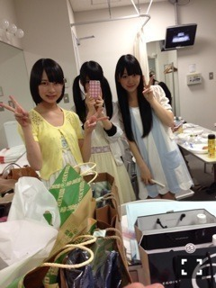

2014/0328Fri1周年
今日3月28日で私達2期生は
1歳になりました！
早かったようで濃くてこの1年で
色んな事があったなぁ...
○3月28日最終審査
みんな緊張していてまだ名前も
顔も分からない子ばかり。
合格して周りとよろしくねなんて
声かけあったなぁ...>_<...
私は人見知り全開だったけど
絢音とはこの時から既に仲良くて
カメラに向かって2人で変顔とか
してた！(笑)でも他の子には
真顔無口でガチガチで人見知り
しちゃっていました
謎のサーモンチョイス
レッスンが始まって溶け込めなくて
東京が怖くて初めは自分の殻に
閉じこもっていました。
いわゆるぼっち。
話す事が大好きな私が一日中
口を開かない時もあって辛くて
毎日泣いてたなぁ〜
レッスンも岐阜から通っていたので
なかなかついていけなくて
私何してるんだろうって思ったり
アイドル向いてないんじゃないかって
思ったり...
○プリンシパルお披露目
プリンシパルのお披露目が決まって
みんなそれぞれ自己紹介を考えて！
私はこれっていう特技が無かったから
必死に考えた自己紹介がネガティブ
すぎてボツになった事もありました(笑)
初めてのステージ...
とにかくみんなガチガチで楽屋でも
お弁当を食べて良いのかどうか
戸惑ったり(笑)
ファンの皆さんにどうゆう反応を
されるのかすごく不安でした
でもいざステージに立つと皆さん
本当にあったかくて挨拶が終わって
楽屋に帰ってくるみんなの顔が
すごい輝いていたのを今でも
覚えています！

○初めての乃木どこ
2期生が初めて出させていただいた
乃木どこ。ずっとテレビで見ていた
番組だからとにかく緊張しぱなっしで...
足を閉じて座っている事さえも
つらくてみんなで頑張ったなぁ(笑)
バラエティに慣れていない私達に
バナナマンさんも優しくて
この乃木どこ収録は今でも忘れない
大切な思い出です
○初めての雑誌撮影
週プレさんで初めて雑誌撮影を
していただきました！2期生の
制服も用意されていて感動しました
この時くらいから純奈と話すように
なって勝手にこの子とは気が合うなぁ
と思っていました^_−
そして全握のミニステージでの
パフォーマンスや全国ツアー@zeep、
代々木第一体育館、武道館、横アリ
など沢山のステージを経験させて
いただいて私達は沢山の事を学んで
大きく成長できました
みんな個性があって優しくて
思いやりのあるあったかい私に
とっては家族のような存在です！
これからも先輩達に早く
追いつけるように一緒に頑張って
いこうね^_−☆大好きだ〜
そしてPON祭り、ZIPフェス
めっちゃ楽しかった♡♡
次のブログでまた書きますね！
PONは久しぶりのポニーちゃん
ライブでもファンの方が2期生
1周年おめでとうと言ってくださって
嬉しかったなぁ...(T . T)
そして今日はnogibingo2最終回！
あっという間でしたか充実した収録で
毎回毎回色んな経験ができました！
ラストは感動です。
是非見てください〜
ではでは
おやすみおな(ヽ´ω`)
2014/03/28 22:00
コメント(528)
今日もお仕事お疲れ様！(^o^)v
nogibingo絶対見るよー(^-^)
一周年おめでとう(((o(*ﾟ▽ﾟ*)o)))
1年って早いね笑
これからも応援してるよ！
ファイトo(^▽^)o
1年って早いね笑
これからも応援してるよ！
ファイトo(^▽^)o
二期生の皆さんこれからも、頑張って。
いつでも応援しているよヾ(o´∀｀o)ﾉ
いつでも応援しているよヾ(o´∀｀o)ﾉ
堀ちゃん(*^o^*)
2期生1周年おめでとう＼(^o^)／
これからも応援するね！！
みおな～～♪
一周年おめでとう♪
みおな達が初めて乃木どこ出たときの録画して今でもDVD残ってるから観てるけど、今見返すとほんと成長したね！
難しい言葉を言われそうなななみんとも仲良くなってるし、あの頃はみおながこんなに中心メンバーになると思ってなかった笑
正直センターになったときはなんで２期生が!?って感じだったけど今はみおなが乃木坂に欠かせない存在だよ！
もちろん２期生全員ね!!
これからも乃木坂で頑張ってね♪
ばいっっっ
一周年おめでとう♪
みおな達が初めて乃木どこ出たときの録画して今でもDVD残ってるから観てるけど、今見返すとほんと成長したね！
難しい言葉を言われそうなななみんとも仲良くなってるし、あの頃はみおながこんなに中心メンバーになると思ってなかった笑
正直センターになったときはなんで２期生が!?って感じだったけど今はみおなが乃木坂に欠かせない存在だよ！
もちろん２期生全員ね!!
これからも乃木坂で頑張ってね♪
ばいっっっ
1周年おめでとうございます!!
未央奈ちゃんほんとに可愛いですー(ο^^ο)
また未央奈ちゃんに質問したいこととかあるので、もし時間があれば答えてくれるとすっごい嬉しいですー(>_<)
ではではおやすみなさいー
あ！PVのコンビニの店員さんもとーっても可愛かったですー！
未央奈ちゃんほんとに可愛いですー(ο^^ο)
また未央奈ちゃんに質問したいこととかあるので、もし時間があれば答えてくれるとすっごい嬉しいですー(>_<)
ではではおやすみなさいー
あ！PVのコンビニの店員さんもとーっても可愛かったですー！
2期生1周年おめでとう♪
一周年おめでとーー！！！*\(^o^)/*
乃木坂みんな可愛いよなー！
これからもがんばってやーー！*\(^o^)/*
乃木坂みんな可愛いよなー！
これからもがんばってやーー！*\(^o^)/*
もう1周年かあ〜
俺は今でも鮮明に覚えてるよ！
5月5日のプリンシパルの昼公演でのお披露目。
たぶんあの時あそこにいなかったら今みおなの事推してないと思う。俺の中では結構お披露目が大きいんだよね！
だってあの時はなんかこう！なんて言うんだろ？
原石だ？ん？なんか絶対今後の乃木坂の顔になりそうってビビッと来た！？
意味わかんないけどそれだけ興奮したさ！
そしたら今や乃木坂のセンターにまでなって乃木坂の顔として番組とか出たりさ！本当に凄いよね！
そんなみおなをいつまでも応援します！
あっあと今日PON祭り行ったんすけど、後ろの方でみおなのタオル掲げてたんすけど気づきました？笑
俺は今でも鮮明に覚えてるよ！
5月5日のプリンシパルの昼公演でのお披露目。
たぶんあの時あそこにいなかったら今みおなの事推してないと思う。俺の中では結構お披露目が大きいんだよね！
だってあの時はなんかこう！なんて言うんだろ？
原石だ？ん？なんか絶対今後の乃木坂の顔になりそうってビビッと来た！？
意味わかんないけどそれだけ興奮したさ！
そしたら今や乃木坂のセンターにまでなって乃木坂の顔として番組とか出たりさ！本当に凄いよね！
そんなみおなをいつまでも応援します！
あっあと今日PON祭り行ったんすけど、後ろの方でみおなのタオル掲げてたんすけど気づきました？笑
2年目も堀ちゃんらしく輝いて下さいm(_ _)m
応援してます‼
1周年おめでとうございます。今日がどんな一日でも、その一日の積み重ねが1周年です。 一日を大切に。
こんばんは〜♩
昨日のZIPで春フェスの様子みたよ！♡未央奈が結構映って、うれしかったな〜\( ^ｖ^ )/♡♡
あと5日で8thシングル発売！めっちゃ楽しみ\( ˆoˆ )/♩
ではでは、おやすみおな〜(ヽ´ω`)
みおなちゃん1周年おめでとぉ!!!!!!!!!!
いつもみおなちゃんの可愛さに
やられてるよ～(*´ω｀*)
これからも応援してるょ( ☆∀☆)
頑張ってね～＼(^o^)／
大好き(*≧∀≦*)Love Love Love
いつもみおなちゃんの可愛さに
やられてるよ～(*´ω｀*)
これからも応援してるょ( ☆∀☆)
頑張ってね～＼(^o^)／
大好き(*≧∀≦*)Love Love Love
２期生の１歳の誕生日おめでとう！！
これからも頑張ってね☆
未央奈大好き！
これからも頑張ってね☆
未央奈大好き！
今日のPON祭り行ったよ❗️
久々のポニー可愛かった（≧∇≦）
久々のポニー可愛かった（≧∇≦）
2期生のイメージが初期からすごく変わりました！！！
まだまだ進化するように
応援しています＼(^o^)／
まだまだ進化するように
応援しています＼(^o^)／
２期生お誕生日おめでとう！★☆★☆
ほりちゃんホントステキになったよ！
日に日に可愛くなるよね(//∇//)
これからもガンバってね！( ☆∀☆)
ほりちゃんホントステキになったよ！
日に日に可愛くなるよね(//∇//)
これからもガンバってね！( ☆∀☆)
こんばんはー
二期生一周年おめでとー
最初は辛いもんだよね
いい仲間に会えてよかったやん
これからも初心を忘れずにガンバ！！
二期生一周年おめでとー
最初は辛いもんだよね
いい仲間に会えてよかったやん
これからも初心を忘れずにガンバ！！
２周年おめでとーヾ(´∇｀)ﾉ
確かにあっという間な感じがするよね。
レッスンとか本当に大変なのによく頑張ったと思うよ！
これからももっと大変な事があると思うけど、それを乗り越えていけば本当に素晴らしいアイドルになれると思うよ！
みおなならもっと上を目指せるはず！
o(・`д・´｡)ヵ゛ﾝﾊ゛ﾚ ！
NOGIBINGO2あっという間に終わっちゃうね(´･∀･`)
最終回必ず見るからね！
確かにあっという間な感じがするよね。
レッスンとか本当に大変なのによく頑張ったと思うよ！
これからももっと大変な事があると思うけど、それを乗り越えていけば本当に素晴らしいアイドルになれると思うよ！
みおなならもっと上を目指せるはず！
o(・`д・´｡)ヵ゛ﾝﾊ゛ﾚ ！
NOGIBINGO2あっという間に終わっちゃうね(´･∀･`)
最終回必ず見るからね！
いつも応援しています^o^
福岡県に住んでいるのですが、福岡県に来たことは
ありますか❓
福岡県に住んでいるのですが、福岡県に来たことは
ありますか❓
2期生の1周年おめでとうございます！
これからも頑張って下さい。応援しています！
PON祭り行きましたー
ロマンスのスタート初めて見たり、ガールズルールなど普段は未央奈ちゃんがいない曲に参加してたので楽しかったです！
これからも頑張って下さい。応援しています！
PON祭り行きましたー
ロマンスのスタート初めて見たり、ガールズルールなど普段は未央奈ちゃんがいない曲に参加してたので楽しかったです！
1周年おめでとうございます!
2年目も応援し続けます!
私の推しメン♡♡
PON祭り行きました!
でもちょっと遠くて、ちゃんとは見えなくて残念…泣
NOGIBINGOの最終回、超気になる－!
今日は徹夜だ笑
2年目も応援し続けます!
私の推しメン♡♡
PON祭り行きました!
でもちょっと遠くて、ちゃんとは見えなくて残念…泣
NOGIBINGOの最終回、超気になる－!
今日は徹夜だ笑
堀ちゃーん！(*^^*)
こんばんは！
改めて2期生一周年
おめでとう！
堀ちゃんも最初は
人見知りだったんだね(^-^)
乃木坂46は人見知り
多いよね。(^^)
でも逆に人見知りが
多いから皆仲良く
なれたんだよね？？(^-^)
正直、僕もめっちゃ人見知りで
明後日から自宅を離れて
寮に住むんだけど
めちゃくちゃ怖いし
緊張するし色んな不安あるよ！(;O;)
自分以外に2人新しく
寮に入るみたいなんだけど
その2人はめっちゃ仲良くて
自分は人見知りで全然
話しかけられないし、
いわゆる、ぼっち
というやつです。Σ(゜Д゜)
でも、これから徐々に
話していければ
良いかなと思ってます。
それでは
おやすみなさい
またコメントします！(^-^)
HAYATO
こんばんは！
改めて2期生一周年
おめでとう！
堀ちゃんも最初は
人見知りだったんだね(^-^)
乃木坂46は人見知り
多いよね。(^^)
でも逆に人見知りが
多いから皆仲良く
なれたんだよね？？(^-^)
正直、僕もめっちゃ人見知りで
明後日から自宅を離れて
寮に住むんだけど
めちゃくちゃ怖いし
緊張するし色んな不安あるよ！(;O;)
自分以外に2人新しく
寮に入るみたいなんだけど
その2人はめっちゃ仲良くて
自分は人見知りで全然
話しかけられないし、
いわゆる、ぼっち
というやつです。Σ(゜Д゜)
でも、これから徐々に
話していければ
良いかなと思ってます。
それでは
おやすみなさい
またコメントします！(^-^)
HAYATO
1周年おめでとう♪
NOGiBiNGO2最終回、見るし、録画します！
NOGiBiNGO2最終回、見るし、録画します！
1周年おめでとう（≧∇≦）
これからも頑張れ‼︎
応援してるよ♡♡
これからも頑張れ‼︎
応援してるよ♡♡
ポニーテールメッチャかわいい！！
一周年おめでとう！
これからもずっとずっと応援していくよ(*^^*)
これからもずっとずっと応援していくよ(*^^*)
1周年おめでとう！
2期生の中では未央奈を1番に目をつけていたけど、この1年でこんなにも躍進できることができてほんとによかったね！
これからも応援するから頑張ってね！
(￣▽￣)
2期生の中では未央奈を1番に目をつけていたけど、この1年でこんなにも躍進できることができてほんとによかったね！
これからも応援するから頑張ってね！
(￣▽￣)
２期生一周年おめでとう！２期生は自分年が近い人が多いので応援しています!これからも頑張ってください!未央奈はやっぱりツインがかわいいと思う!
みおなちゃん今日もかわいいなー。
２期生、一歳誕生日おめでとう！！みんなめっちゃ成長したよね...( ゜o゜)
堀ちゃんもとくに選抜入りしてセンターやってとか色々経験させてもらってすごいいい意味で変わったと思う！
これからも頑張ってね！
やっぱ毎回書いてるかもしれないけど堀ちゃんのブログ見てると元気出る！
テレビでもどこでも堀ちゃん見るとすごいテンション上がる！
高校卒業して明日からは寮に入って、訓練の日々が続くけど前にみおながブログで奇跡的に30番目でコメント返してくれて
ずっと待っててくれるっていってくれたのがいまでも震えるほど嬉しかった！
仕事に余裕出来たら絶対会いに行くからね！
入隊前にみおなのブログ見れてよかった！！
これから頑張れる！
秋田から遠いけどずっと応援してるからね！
これからも頑張れみおな！！
てるいたつき
２期生、一歳誕生日おめでとう！！みんなめっちゃ成長したよね...( ゜o゜)
堀ちゃんもとくに選抜入りしてセンターやってとか色々経験させてもらってすごいいい意味で変わったと思う！
これからも頑張ってね！
やっぱ毎回書いてるかもしれないけど堀ちゃんのブログ見てると元気出る！
テレビでもどこでも堀ちゃん見るとすごいテンション上がる！
高校卒業して明日からは寮に入って、訓練の日々が続くけど前にみおながブログで奇跡的に30番目でコメント返してくれて
ずっと待っててくれるっていってくれたのがいまでも震えるほど嬉しかった！
仕事に余裕出来たら絶対会いに行くからね！
入隊前にみおなのブログ見れてよかった！！
これから頑張れる！
秋田から遠いけどずっと応援してるからね！
これからも頑張れみおな！！
てるいたつき
未央ちゃん、今日もお疲れ様(^^)/
２期生として、祝１周年おめでとう！
激動の１年だったのかな？
外からじゃ想像もできない苦労がたくさんあったんじゃないかと思います。それを乗り越えてよく頑張りましたね！
これからも、今まで以上に大変な事もあるかもしれないけど
自分を信じて、真っ直ぐに進んでいって下さいね！
そんな頑張る未央ちゃんをこれからもしっかり応援していきますからね！
それじゃ、明日も良い日になりますように！
おやすみおな(^^♪
２期生として、祝１周年おめでとう！
激動の１年だったのかな？
外からじゃ想像もできない苦労がたくさんあったんじゃないかと思います。それを乗り越えてよく頑張りましたね！
これからも、今まで以上に大変な事もあるかもしれないけど
自分を信じて、真っ直ぐに進んでいって下さいね！
そんな頑張る未央ちゃんをこれからもしっかり応援していきますからね！
それじゃ、明日も良い日になりますように！
おやすみおな(^^♪
こんばんは(｀∇´ゞ
二期生一周年おめでとう！未央奈はこれからの一年を何を実現させたい？未央奈の目標が実現するよう願っているよ♪
ではまたね、おやすみおな(｀∇´ゞ
二期生一周年おめでとう！未央奈はこれからの一年を何を実現させたい？未央奈の目標が実現するよう願っているよ♪
ではまたね、おやすみおな(｀∇´ゞ
こんばんわです！！
今日もお仕事お疲れ様でした(*^◯^*)
ZIPフェス、PONフェスお疲れ様でした！！行けなくてゴメンね。
一周年、おめでとー！心から祝福しています。はやいね。二期生の事は、乃木どこで初めて知ったかな。みおなの高速まばたきめっちゃ面白かった。
これからも一期生に負けない様に頑張りましょう！！応援してるっちゃ
NOGIBINGO!2が最終回(T_T)はやいなぁ〜。はやくも泣きそうです。絶対に見るよ
明日も頑張りましょう！！
ほな、ばいちゃ
今日もお仕事お疲れ様でした(*^◯^*)
ZIPフェス、PONフェスお疲れ様でした！！行けなくてゴメンね。
一周年、おめでとー！心から祝福しています。はやいね。二期生の事は、乃木どこで初めて知ったかな。みおなの高速まばたきめっちゃ面白かった。
これからも一期生に負けない様に頑張りましょう！！応援してるっちゃ
NOGIBINGO!2が最終回(T_T)はやいなぁ〜。はやくも泣きそうです。絶対に見るよ
明日も頑張りましょう！！
ほな、ばいちゃ
みおなちゃんいつもお仕事お疲れ様です♩
2期生、1歳のお誕生日おめでとう\( ˆoˆ )/\( ˆoˆ )/
2期生が入ってきた当初は
2期生かぁー！って思っただけで
興味もあんまりなくて
プリンシパルでお披露目されて
公式サイトに載った写真見て
さすが乃木坂！みんな可愛い！って
思って終わりやったの (´･ω･`∩
でも、大阪でプリンシパルがあるって決まって
梨奈が当たったのが千秋楽で
2期生みんな出てきて
すっごくキラキラしてて
終演後のバイバイ会で
ずっとバイバイして疲れてると思うのに、
全然みんなそんな姿見せなくて
みんなみんな笑顔でお見送りしてくれて
そこからすっごく応援したくなった(((o( ´｡›ω‹｡` )o)))
もう今は2期生もみんな合わせて乃木坂46。
辛いこといっぱいあると思うけど
いつかその倍以上の楽しいこと嬉しいことが
返ってくると信じて、壁を乗り越えて
頑張ってください 。♡
本当に本当に応援してます！
未央奈ちゃん、2期生大好き！！！
りなこっこより
.
初コメです。
1周年おめでとう！！！
これからもずっとずっと応援してますっ！！！(*^▽^)/★*☆♪ｶﾞﾝﾊﾞ
1周年おめでとう！！！
これからもずっとずっと応援してますっ！！！(*^▽^)/★*☆♪ｶﾞﾝﾊﾞ
1周年おめでとうございます
大好きです
大好きです
１周年おめでとう( ^-^)ノ∠※。.:*:・'°☆
この１年での２期生の成長が伝わってきます♪
これからも2周年、3周年と乃木坂で歴史を作っていって下さい!!
この１年での２期生の成長が伝わってきます♪
これからも2周年、3周年と乃木坂で歴史を作っていって下さい!!
堀ちゃん♪こんばんは
(ヽ´ω`)
2期生1周年おめでとうございます＼(^o^)／
これからも堀ちゃんらしく輝いて行って下さいね！
応援してるからね
(｀・ω´・)ｂ
(ヽ´ω`)
2期生1周年おめでとうございます＼(^o^)／
これからも堀ちゃんらしく輝いて行って下さいね！
応援してるからね
(｀・ω´・)ｂ
みおなちゃん、こんばんは。
2期生1周年おめでとう。
あっという間に1年経ったけど、みおなちゃんには色々あったね。
いきなり7thでセンターに選ばれたり、大きな会場でライブをしたりとか。
大変な事もあると思うけど、1年づつ成長できる様に頑張って下さい。
明日もみおなちゃんにとって良い1日になります様に。
2期生1周年おめでとう。
あっという間に1年経ったけど、みおなちゃんには色々あったね。
いきなり7thでセンターに選ばれたり、大きな会場でライブをしたりとか。
大変な事もあると思うけど、1年づつ成長できる様に頑張って下さい。
明日もみおなちゃんにとって良い1日になります様に。
未央奈命ゃでー！！
握手会めっちゃ行きたかってんけど…
お金なくて…
次の9thは絶対いく！！！！！！！
お金貯めるから、
うちのニックネーム覚えといてーーーーー！
質問！！！
未央奈は、どうやって体重を維持してる？
できれば、回答よろしくねー♡
だーーーーーーーーーーーーーーぃすき♡
握手会めっちゃ行きたかってんけど…
お金なくて…
次の9thは絶対いく！！！！！！！
お金貯めるから、
うちのニックネーム覚えといてーーーーー！
質問！！！
未央奈は、どうやって体重を維持してる？
できれば、回答よろしくねー♡
だーーーーーーーーーーーーーーぃすき♡
こんばんは
一周年本当におめでとう！
この一年で未央奈ちゃん、凄く変わったというか成長したと僕は思います。
応援してて本当に楽しいです。
これからも応援させてな(^^)
一周年本当におめでとう！
この一年で未央奈ちゃん、凄く変わったというか成長したと僕は思います。
応援してて本当に楽しいです。
これからも応援させてな(^^)
掘未央奈ちゃん！
一歳おめでとうございます！
秋頃は、ほっちゃんの
名前も分からなく？
ゴメンなさい。
今は、ほっちゃんに助けられてます！
応援しています！
おやすみおな♪
一歳おめでとうございます！
秋頃は、ほっちゃんの
名前も分からなく？
ゴメンなさい。
今は、ほっちゃんに助けられてます！
応援しています！
おやすみおな♪
みおな1年しか経ってないのに、すごい成長したよな
これからもがんばって！
これからもがんばって！
1年間おつかれさま＼(^o^)／
コメント読んで慣れない環境で大変だったことが伝わってきたよ…私はみおなちゃんがセンターになってからよりテレビや雑誌に出てるのを見て幸せもらってます(((o(*ﾟ▽ﾟ*)o)))
26日のzipフェスでちょうどみおなちゃんの正面だったから近くで見れて本当に楽しかった！目があったと勝手に思ってますwww
これから全握とかイベントがいっぱいあるけど頑張ってね♪( ´▽｀)これからも応援してるよ〜！
コメント読んで慣れない環境で大変だったことが伝わってきたよ…私はみおなちゃんがセンターになってからよりテレビや雑誌に出てるのを見て幸せもらってます(((o(*ﾟ▽ﾟ*)o)))
26日のzipフェスでちょうどみおなちゃんの正面だったから近くで見れて本当に楽しかった！目があったと勝手に思ってますwww
これから全握とかイベントがいっぱいあるけど頑張ってね♪( ´▽｀)これからも応援してるよ〜！
げっちゅです！
堀ちゃん&２期生、一周年おめでとう♪
4/1～3は休み取ってイオンモール参戦してくるね！堀ちゃんは今日PONイベントで会えたので、13全握まで我慢するよ？
そして明日はまいまい誕生日だね？
この前の生誕祭で関スンと保護者会よりまいまいに花贈ったんだぁ。見たかな？
ではまた。
堀ちゃん&２期生、一周年おめでとう♪
4/1～3は休み取ってイオンモール参戦してくるね！堀ちゃんは今日PONイベントで会えたので、13全握まで我慢するよ？
そして明日はまいまい誕生日だね？
この前の生誕祭で関スンと保護者会よりまいまいに花贈ったんだぁ。見たかな？
ではまた。
堀さん頑張れ～＾＾二期生一周年目ですか。色々あったと思うけど堀さんは一生懸命やってるから一期生に喰らいつく勢いで頑張ってください。応援してます。（⌒∀⌒）
一周年おめっとさん、
ついったー上ではみんなでパーリナイしましたよ！
春フェス、PON祭り行きたかったなぁ～
関東が羨ましたい。
関西でもイベントやってくんねべかな？
最近は全然乃木充してへんのやっぺよ、
オラに元気をわけてくんなべし～
あと一週間ちょいで。
握手会何はなせばいいのかな？
フラミンゴ？ドフラミンゴ？
ついったー上ではみんなでパーリナイしましたよ！
春フェス、PON祭り行きたかったなぁ～
関東が羨ましたい。
関西でもイベントやってくんねべかな？
最近は全然乃木充してへんのやっぺよ、
オラに元気をわけてくんなべし～
あと一週間ちょいで。
握手会何はなせばいいのかな？
フラミンゴ？ドフラミンゴ？
いろいろな思いをして過ごした
一年間だったようですね。
乃木坂が生まれた時からボクは好き
だったので、二期生のみんなが入って
きた時はちょっとびっくりしたけど、
みるみる力を付けていって、凄いなと
思ってました(^-^*)
これからの一年間は、またいろんな
体験をすると思いますが、みおなちゃん
らしく輝いてほしいなと思います。
頑張ってo(^-^)o
これからも、ミオナーとして、
最大限応援するねo(^-^)o
一年間だったようですね。
乃木坂が生まれた時からボクは好き
だったので、二期生のみんなが入って
きた時はちょっとびっくりしたけど、
みるみる力を付けていって、凄いなと
思ってました(^-^*)
これからの一年間は、またいろんな
体験をすると思いますが、みおなちゃん
らしく輝いてほしいなと思います。
頑張ってo(^-^)o
これからも、ミオナーとして、
最大限応援するねo(^-^)o
未央奈ちゃんこんばんは(^^)
一周年おめでとう(*^^*)
未央奈ちゃん見たのは16人のプリンシパルの時が初めてだったよ♪
あの時が未央奈ちゃんも皆の前に出たのは初めてだよね(^_^)
PON祭り、ZIPフェスお疲れ様～(^^)
二年目に向かって頑張ってね～(^o^)
ではまたねっ(^-^ゞ
きょうへい(^^)/
一周年おめでとう(*^^*)
未央奈ちゃん見たのは16人のプリンシパルの時が初めてだったよ♪
あの時が未央奈ちゃんも皆の前に出たのは初めてだよね(^_^)
PON祭り、ZIPフェスお疲れ様～(^^)
二年目に向かって頑張ってね～(^o^)
ではまたねっ(^-^ゞ
きょうへい(^^)/


お疲れ様!!( ・∇・)
みおなのお陰でもっと乃木坂が大好きになれたんや!!
これからも宜しくね!!
おやすみおな!!(^o^)v